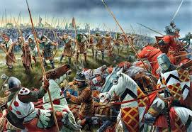
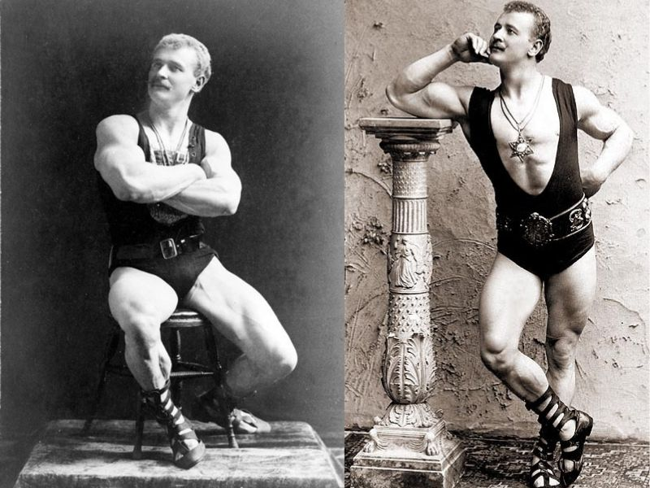
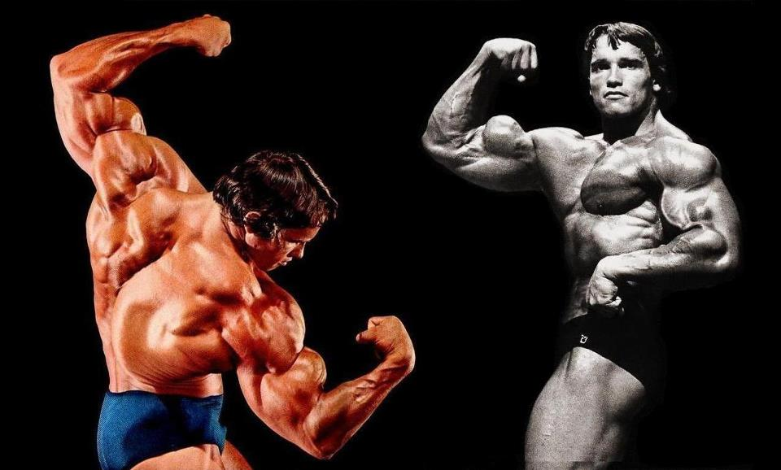

Milon foi um lendário atleta grego do século VI a.C., conhecido por suas conquistas nos Jogos Olímpicos e sua impressionante força. Ele é lembrado por uma prática icônica: carregar diariamente um bezerro em crescimento até que este se tornasse um touro, representando o conceito da sobrecarga progressiva, usado até hoje na musculação.
Seu método empírico de treino é um dos primeiros registros históricos da ideia de adaptar o corpo ao esforço crescente.
Durante o Império Romano, a força física era essencial tanto para soldados quanto para gladiadores. Estes seguiam rotinas rigorosas de treino com réplicas pesadas de armas reais, focadas em resistência e explosão muscular. Legionários carregavam equipamentos pesados durante longas marchas, promovendo uma conexão direta entre disciplina militar e treinamento físico.
Nascido em 1867, Sandow revolucionou o fisiculturismo ao transformar o corpo em espetáculo. Ele promovia a simetria corporal como arte viva, inspirado nas estátuas da Grécia Antiga. Em suas apresentações, combinava força com poses estilizadas. Fundou academias, lançou livros e equipamentos. Em 1901, organizou a primeira competição de fisiculturismo, influenciando gerações.
Nos anos 1970, Arnold Schwarzenegger popularizou a musculação com carisma e dedicação. Sete vezes campeão do Mr. Olympia, ele virou ícone global com o documentário “Pumping Iron”. Defensor do treino intenso e da mentalidade forte, Arnold contribuiu para a aceitação da musculação na cultura popular e continua promovendo saúde e esporte em todo o mundo.

Com o avanço da tecnologia e das redes sociais, o treino físico evoluiu para o ambiente digital. Influenciadores compartilham rotinas, dicas e motivação online, impactando milhões. Aplicativos, smartwatches e vídeos on-demand permitem personalizar treinos sem sair de casa.
Essa democratização do conhecimento trouxe benefícios, mas também desafios como a desinformação e padrões estéticos irreais. Hoje, equilíbrio e orientação profissional são essenciais para um treino saudável e eficaz.